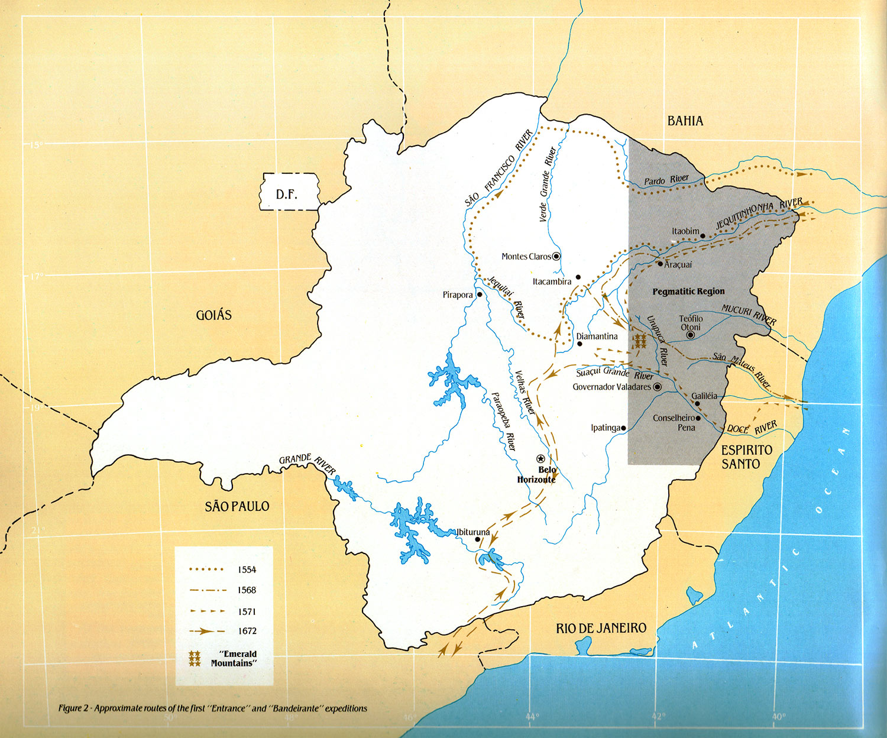

Mineralogy and Crystallography
MINERAL: A naturally occurring substance of inorganic origin with a composition of one or more chemical elements expressable as a chemical formula.
CRYSTAL:
ROCK: A naturally formed aggregate of grains of one or more minerals with characteristic chemical and morphological properties.
GEMS: Minerals which, due to their beauty, durability and rarity, can be transformed into jewels, omaments and objects of art. Although the substances utilized as gems are usually minerals, there are some gems of organic origin such as amber jet, coral, pearl, etc. These gems are characterized by , low hardness and durability in comparison with gems of inorganic origin and are of high value due to their beauty and rarity.
Some gems are also produced from rocks, such as lapis lazuli, a mixture of azurite with small quantities of calcite, pyroxene and other silicates together with disseminated pyrite.
